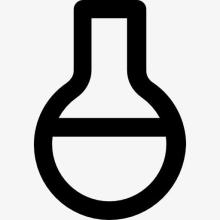

我们希望通过这个实验了解您对文理科生差异的看法。为了达到这一目的，您只需要填写一份问卷并完成一个小小的任务即可。问卷与任务的链接皆位于下方，请您务必先填问卷后完成任务。
任务分为文科任务与理科任务两类，您只需根据您的实际身份选择其中之一完成即可。
开始实验
为了完成这一实验，我们首先需要了解您的一些基本情况与想法。请点击下方的问卷链接开始实验。问卷共分为三个部分，大概将花费您5-10分钟的时间。填写结束后，请您进入下一步实验。
问卷 »

完成问卷之后，您需要完成一个小小的词语归类任务。现在请根据您的实际身份，选择下方的“文科”或者“理科”。开始任务前，屏幕将会呈现完成该任务的具体操作，请您细心阅读！